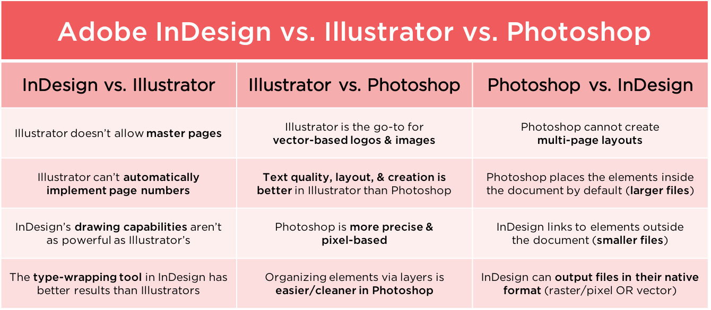

Introduction to Adobe Illustrator
Found at LINK.
Original Created by Bridget Reed / @BridgetCReed
What is Illustrator?
Adobe Illustrator is...
- a vector drawing application.
- the industry standard when it comes to creating graphics that can scale while maintaining resolution and clarity.
- completely resolution-independent and will never pixelate.
...but can it REALLY scale infinitely?
Let's see what this looks like in Photoshop...
...then compare it to Illustrator!
...but that was at 72dpi (standard for web).
What does it look like in 300dpi (standard for print)?
Common Question:
So should I use Illustrator for _________?
YES:
- Logotypes
- Brand marks
- Line-based artwork
NO:
- Photo-editing
(Photoshop) - Text-layout
(InDesign)
MAYBE:
- Web layouts
- Email blasts
- Banner ads
- Multi-page documents
InDesign? Illustrator? Photoshop?
Some pros & cons of each:
Questions?
Next up:
Setting up your files & workspaces